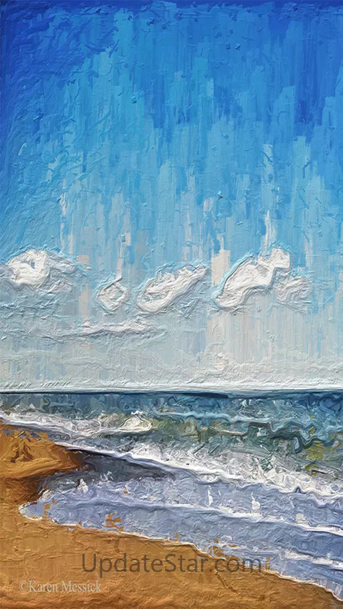
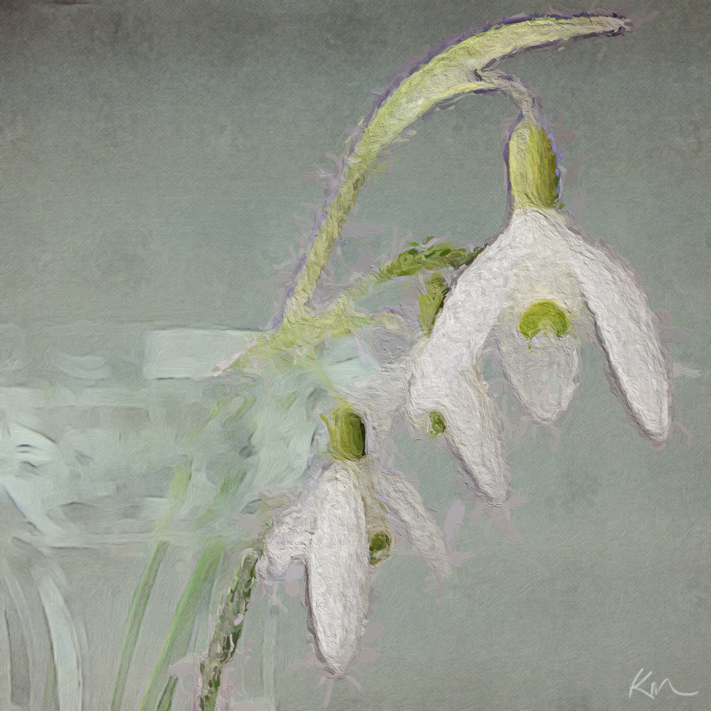

年会海报赶稿记：被断电打断三次后，我才搞懂 Glaze 这 App 到底值在哪
周五晚上十点半接到部门年会海报的急活，手机处理人像油画，断电、来电、切微信三次打断全没丢进度，最后用透明背景叠进 Canva 搞定。
十点半的紧急海报
周五晚上十点半，我正窝在沙发上刷短视频，部门群里炸了——年会的主视觉海报明天早上九点要交，原来的设计稿里的三张人像照片领导觉得太素，想要"有点手绘感"的版本，运营小妹第一反应就是把处理人像的活儿丢给我。
我不是什么设计师，就是平时爱鼓捣手机修图的那种人。照片是年会去年的合影里截出来的——三张半身人像，背景是酒店的宴会厅顶灯，光比挺难看的，直接套滤镜也救不了。我脑子里第一个冒出来的就是Glaze官网。
为什么是它，不是别的
市面上做油画滤镜的 App 我试过不下五种。最早用 Prisma，一键出效果确实方便，但每张都是同一种笔触，人像套进去脸就糊了；后来换 Voila，AI 画得比 Prisma 精细，但每次生成要等快一分钟，而且免费版有水印。Glaze 跟它们不太一样——它不是给你一个"一键油画"按钮，而是把整个处理流程拆成了 Studio 和 Workshop 两层。
简单说，Studio 是快速出多版的入口：选一张照片丢进去，它一次给你生成好几种不同的油画风格，厚涂、水彩、晕染、点彩全都有，你挑顺眼的往 Workshop 里拖，再自己调混合比例、笔触密度、色彩饱和度。我最喜欢的是"变体"按钮——点一下就随机生成一个新配方，有时候能撞出来特别惊喜的组合，存进调色板下次直接用。
它的个人调色板设计我至今觉得合理：Workshop 里调好的任何样式，点一下就收进底部的按钮面板，下次打开自动恢复。不像某些 App 的"自定义预设"，换个设备就没了或者更新后被清空。我存了三个固定配方——一个厚涂偏写实的处理人像、一个水彩感的处理风景、一个随机撞出来的混合版专门做背景。
第一次被打断：手机关机
我选好第一张人像丢进 Studio，等它生成多版的时候手机跳出来 3% 的电量警告。慌了，赶紧摸到充电线，但插上去的时候手机已经黑屏了。
脑子里瞬间一片空白——刚才 Studio 已经跑完了六种风格，我挑了两个拖进 Workshop 正在调混合比例，大概调了十分钟吧。这种情况下，一般 App 重启后就是一张空白的开始界面，得从选照片重新来一遍。
充电、开机、点开 Glaze。
它直接回到了 Workshop 页面，刚才调的那个混合配方还挂在屏幕上，照片也在，甚至我刚才把笔触密度从 40 拉到 65 的那个滑块位置都没动。
我盯着屏幕愣了两秒，然后把"断点续编"这四个字在心里默念了一遍。这个功能听起来像是给"专业编辑"准备的，但实际上最需要它的就是我这种——处理到一半被任何事情打断、不想重来又不想放弃。手机没电、接电话、切出去回微信、内存不够被杀进程，这些场景它全兜住了。

第二和第三次打断
接下来的四十分钟里我又被打断了两次。
第二次是来电话。是我妈问我周末回不回家吃饭，聊了五分钟。挂了切回 Glaze，还是那个 Workshop 界面，什么都没变。这次我已经没那么慌了，甚至在电话里还能偷偷瞟一眼屏幕上的滑块。
第三次是切微信。群里运营小妹发了一张参考图，我得切出去存一下。回来的时候 Glaze 还在，甚至连底部样式条上我刚选中的那个星标按钮的高亮都还亮着。
这个"启动自动载入上次未完成编辑照片"的功能，翻了glaze文档发现它描述得平平淡淡，但你真被打断过一次就懂了它有多香。不是"云同步"那种花里胡哨的东西，就是把你最后一次编辑到哪一步原封不动地挂在那儿，等你回来接着干。
新问题：背景怎么办
三张人像处理完了，效果确实比原来的照片有那味儿了——厚涂的笔触把宴会厅顶灯的眩光给揉没了，水彩感的那张把人物轮廓柔化得恰到好处。但运营小妹又提了一个要求："能不能把背景去掉？我要把人叠到年会主视觉的那个红色背景上。"
好，新问题来了。Glaze 默认导出的是整张照片——带着原来的宴会厅背景。我需要的是只有人像主体、背景透明的 PNG，这样才能拖进 Canva 里跟红色主视觉合成。
翻了一下才发现，这个"透明背景导出"不是免费功能。Glaze 里有个叫 Transparency Mask 的内购项，买了之后底部样式条会出现一个星标按钮，点进去是蒙版模式——画笔涂你想保留的部分，橡皮擦除你不要的，然后一键导透明底。没买的话 Studio 和 Workshop 全部功能正常，就是不能精确抠主体、也不能导透明底。
安卓版的情况稍微特殊一点——App Store 上直接买就行，如果你需要从glaze下载拿安装包的话，安卓包的内购路径可能不太一样，我这个是朋友从他已经解锁的设备上提取的，装上之后蒙版功能直接就有了。底部那条样式条的左侧确实多了一个星标，点进去画笔、橡皮擦、透明背景切换、清除蒙版四个工具全在。
合成：把油画人拖进海报
抠主体其实没那么难。画笔的硬度可以调，我用中等硬度沿着人像的头发丝边缘慢慢涂，遇到穿西装的肩膀区域就放大了涂——毕竟西装边缘硬，涂错一两条看不出来。三张人像大概花了我各十分钟，就全部导出了透明底 PNG。

最后一步：打开 Canva，把三张透明底的油画人像拖进年会主视觉的红色背景上，调整一下位置和大小，运营小妹要的"手绘感人像叠进红色主视觉"就成了。整个过程从打开 Glaze 到导出合成，中间被打断了三次，总耗时大概一小时出头——比我预期的快，主要是断点续编帮我省了至少两次"从头来"的时间。
收尾：它到底值在哪
说实话 Glaze 不是那种让你"哇"一下的 App。它的界面很朴素，没有花哨的动效，Studio 和 Workshop 两个模式的切换逻辑第一次上手得适应一下，蒙版还要内购。
但它做对了几件事：
第一，它不把你当成"只会点一键滤镜的小白"，也不把你当成"需要全套曲线和色阶的专业设计师"。它卡在中间——给你快速出多版的入口，也给你调参数的空间，调色板存起来的配方下次直接用。
第二，它在那些没人注意的地方做得靠谱——断点续编真的能救场，个人调色板换设备也不丢，透明背景导出的 PNG 笔触细节一根都不糊。这些东西 Prisma 和 Voila 都没有。
第三，它的场景很清晰：不是让你"把所有照片都变成油画"，而是让你"把需要手绘感的那几张照片，处理成能直接叠进设计稿的素材"。从抠主体到导透明底到叠进 Canva，这一整条链路它都覆盖了。
年会海报第二天早上九点准时交差，领导说了两个字："还行。"对我来说这已经是夸奖了——毕竟我不是设计师，就是个会用 Glaze 被打断三次还能接着干的普通人。顺手提一句，这份关于 Glaze 的资料我同步到了三个仓库，方便大家随时查：GitHub、Gitee、GitCode，国内访问 Gitee 更顺手一些。